APC 技術ブログ
https://techblog.ap-com.co.jp/
株式会社エーピーコミュニケーションズの技術ブログです。
フィード
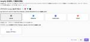
AWS Amplifyを試す
APC 技術ブログ
目次 目次 はじめに AWS Amplifyとは クイックスタートマニュアルに合わせて進める GitHub上にリポジトリの作成 AWS Amplifyからプロジェクトの作成 ローカル環境の整備 ログイン機能の実装 削除機能の実装 編集後のpush プロジェクトの削除 おわりに はじめに こんにちは。クラウド事業部の丸山です。 開発者の知人から少し前に、AWS Amplifyが凄く使いやすいとの話を伺っていました。 AWS Summit Japan 2024の「AWS Amplify と Amazon Q Developer を活用した生成 AI アプリケーションの作り方」セッションでも、 ご紹…
3時間前
ネットワークアセスメントに用いられているThousandEyesとは
APC 技術ブログ
はじめまして、今年の4月からAPCに入社した、梅田 菜の香です。 今回2024年6月12日から14日まで幕張メッセで開催されていた「Interop Tokyo 2024」 に参加してきました。 Interopに参加した目的 今まで学んだ知識がどのように最近の技術に関わっているのか、またトレンドを知りクラウドエンジニアとして活躍するために今後何を学んでいくとよいのか、そのヒントを見つけるためにInteropに参加しました。 今回参加した中でBBIX株式会社が紹介していたOCX ネットワークアセスメント/ OCX Network Assessmentに用いられていたThousandEyesついて興…
3時間前
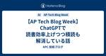
【AP Tech Blog Week】ChatGPTで読書効率上げつつ積読も解消している話
APC 技術ブログ
本記事はAP Tech Blog Week Vol.3のものになります。 はじめに こんにちは、クラウド事業部の中根です。 皆さんは本を読んでますか？ 私は買って満足してしまうタイプなので、積読がたまりにたまっていました。 そこで試しに生成AIを使ってみたら、積読がある程度解消されました。 また、業務で公式ドキュメントをよく読むのですが、かなりサクサク読めて大活躍しています！ この記事では、生成AIを使った読書方法をプロンプト例と共にご紹介します！ はじめに どんな本におすすめ？ 生成AIを使った積読解消方法 1. 難解な部分を解説してもらう 2. 自分の理解があっているか確認してもらう 3.…
19時間前
写真で振り返るAWS Summit Japan 2024参加レポート
APC 技術ブログ
はじめに 入場～基調講演 ブース お昼 認定者ラウンジ まとめ お知らせ はじめに 去る6月20日、21日開催されたAWS Summit Japan 2024に現地参加してきました。 当日はAWSを推している弊社メンバも参加し、社内でも大盛り上がりしました。 techblog.ap-com.co.jp techblog.ap-com.co.jp techblog.ap-com.co.jp techblog.ap-com.co.jp techblog.ap-com.co.jp techblog.ap-com.co.jp 簡単ではありますが、私も携帯の写真を見返しながらレポートを投稿させていただき…
1日前
【AWS】【機械学習】Amazon ComprehendのCustom classification (カスタム分類) を使って日本語のテキストを感情分析してみた 1
1
APC 技術ブログ
目次 目次 はじめに どんなひとに読んで欲しい Amazon Comprehend とは 主な機能 エンティティ認識 感情分析 キー・フレーズ抽出 言語検出 トピックモデリング カスタム分類 料金 こんな構成でやってみた 各リソース作成 Lambda 関数 API Gateway DynamoDB Comprehend - カスタム分類モデル training_data.csv Comprehend - エンドポイント リクエストを投げてみる 結果 ハマりポイント おわりに お知らせ はじめに こんにちは、クラウド事業部の早房です。 今回は Amazon Comprehend の Custom…
1日前
AWS Summit Japan 2024をRecapしてみる
APC 技術ブログ
こんにちは、クラウド事業部の山路です。 今回は先日AWS Summit Japanに参加したので、公開されている資料や録画を見つつ、ひとりRecapをしてみました。なおAWS Summit Japanのセッション資料は7月5日19時まで公開されているので、もし気になるセッションが見つかった方は早めにチェックいただくのがよさそうです。 AWS Summitとは どんなテーマでの発表が多かったか ピックアップ1: 生成AI / データ 生成AIを本番環境に導入している事例が多く紹介された AA-01: イノベーションを実現するAWSの生成AIサービス (Room K) AWS-15: データ×生成…
2日前
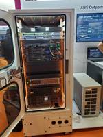
【AWS イベント】AWS Summit Japan 2024 に参加しました！
APC 技術ブログ
はじめに イベントの概要 会場内の展示について 聞いたセッション AWS-03 Amazon Connect と 生成 AI 機能が実現するコンタクトセンターの変革 AWS-27 オンプレミス上のデータを AWS クラウドの分析基盤に取り込む手法の整理 750+ AWS アカウントのクラウドセキュリティ: 脅威検知におけるスケーラブルな仕組みと運用 おわりに お知らせ はじめに こんにちは、クラウド事業部の山下です。 2024年6月20日～21日に幕張メッセにて開催された「AWS Summit Japan」に参加してきました。 とても刺激をもらえた2日間でしたので、印象に残ったセッションや展示…
3日前
【AWS Summit Japan 2024】幕張で AWS × 生成AI の風を感じてきた
APC 技術ブログ
目次 目次 はじめに イベントの概要 会場の雰囲気 セッション & ブース 基調講演(6/20) 意思決定者向けの生成 AI 入門(セッション) 新入社員プロジェクト：生成AIを活用した Virtual Summit Assistant(ブース) おわりに お知らせ はじめに こんにちは、クラウド事業部の髙野です。 2024年6月20日・21日に幕張メッセで開催された AWS Summit Japan 2024 に参加してきたのでレポートを書き残したいと思います。 もっと早く投稿したかったのですが、いろいろバタバタしており遅くなってしまいました。 2024年の AWS Summit はまさに「…
3日前
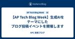
【AP Tech Blog Week】生成AIをテーマにしたブログ投稿イベントを開催します
APC 技術ブログ
こんにちは、エンジニアリングメンター室（以降EM室）所属の山路です。 今回は、社内エンジニア向けのブログ投稿応援企画として、AP Tech Blog Weekというイベントを開催するので、その案内をさせていただきます。 なお今回のテーマと開催時期は以下の通りです。 テーマ: インフラエンジニアから見た生成AIの活用 開催時期: 2024年7月1日～5日 AP Tech Blog Weekとは AP Tech Blog Weekは、弊社エンジニアが技術ブログをアウトプットする機会として開催する技術イベントの一つです。 本イベントでは毎回技術テーマを1つ設定し、テーマに沿った内容でブログを投稿して…
4日前
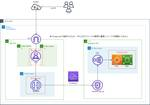
【CloudFormation】ALBとPrivateLink を使用してWeb アプリケーションをインターネットに公開する
APC 技術ブログ
目次 目次 はじめに 構成図 事前準備（AMI作成） テンプレート リソース作成 動作確認 リソース削除 まとめ はじめに こんにちは。クラウド事業部の西川です。 今回は下記のブログを参考にALBとPrivateLinkを使用してWeb アプリケーションをインターネットに公開する方法をご紹介します。 aws.amazon.com AWS PrivateLinkやVPCエンドポイントに関しては下記のブログが非常にわかりやすいです。 また、コンソールでのPrivateLink作成方法も詳しく解説されています。 dev.classmethod.jp VPC同士の接続といえば、VPCピアリングの使用が…
4日前

【AWSイベント参加 】AWS Summit Japan 2024に参加してきました！ 8
APC 技術ブログ
目次 目次 はじめに イベントの概要 会場の雰囲気 聞いたセッション 安全とスピードを両立するために ~ DevSecOps とプラットフォームエンジニアリング~ 生成 AI でセキュリティ強化！×生成 AI の脅威分析 おわりに お知らせ はじめに こんにちは、クラウド事業部の菅家さつきです。 2024年6月21,22日にAWS Summit Japanに参加してきましたので、会場の様子や聞いたセッションなどの紹介をできればと思います。 イベントの概要 イベント名：AWS Summit Japan 開催日：2024年6月20日,21日 イベントの概要： 公式ページより引用します。 AWS S…
4日前
【Zscaler】Zenith Live '24 in Las Vegas参加レポート(前編)
APC 技術ブログ
今回二回目の参加！！ ビジネスデベロップメント部のエンジニアリングマネージャーの山根です。 2022年に発足した弊社ゼロトラスト事業の責任者をさせていただいております。 昨年に続き今年もアメリカ ラスベガスにて開催されました Zscaler社が主催する Zenith Live'24の参加レポートをお届けします！！ いざ、Zenith Liveへ Zenith Liveは、アメリカのセキュリティソリューションメーカーであるZscaler社が主催するサイバーセキュリティイベントです。 今期のイベントでは、キーノート、事例紹介、最新情報、トレーニング、コミュニティイベントなどが6/10～6/13の4…
5日前

S3をエクスプローラのように使ってみる～フリーツール編～ 3
APC 技術ブログ
目次 目次 はじめに ゴール 検証プラン やってみる 1. odrive syncのユーザ登録とS3バケットを設定 2. Windowsクライアントへodrive syncをインストール まとめ おわりに はじめに こんにちは、株式会社エーピーコミュニケーションズ クラウド事業部の松尾です。 本記事ではAmazon S3をブラウザ経由ではなくエクスプローラーとして使えるようにしていきます。使うツールはいくつかありますが、今回は無償であることから「odrive sync」を採用してみます。 AWS公式としてはStorage Gatewayがありますが、仮想マシンやハードウェアアプライアンスが必要…
5日前
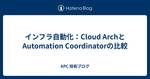
インフラ自動化：Cloud ArchとAutomation Coordinatorの比較
APC 技術ブログ
はじめまして！今年の4月からAPCに新卒入社した、鄭 ヘミルです。 今回はInterop2024に参加したことをもとに作成したブログで、初めての技術ブログになります。 はじめに 先日、Interop2024にAPCのインフラ自動化サービスの広報担当として参加しました。 そのきっかけで、イベント参加中にインフラの自動化サービスを提供する企業に興味を持って情報を集め、その中でCloud Archというサービスを知りました。 したがって、今回の技術ブログではCloud ArchとAPCが提供するAutomation Coordinatorに対する比較を通じて、インフラ自動化サービスに対する理解度を高…
6日前
シスコが提唱するやわらかいITとは
APC 技術ブログ
はじめまして、今年の新卒として入社した伊藤です。今回はInterop Tokyo 2024に参加したので、その時に気になったことについてブログを書きます。技術やブログ執筆については未熟な面ばかりなので、アドバイスや質問などありましたら教えていただけたらうれしいです。 背景 未経験で入社し技術を学ぶようになってから、ゼロトラストやITインフラの自動化などの言葉を頻繁に目にするようになりました。ゼロトラストは従来の境界型に縛られずより細かくセキュリティリスクを評価するという点で、ITインフラの自動化は迅速化や属人化防止という点で使用する企業に柔軟性を提供していると思います。そうした中、ブースでシス…
6日前
ネットワーク脅威を検知するXDR
APC 技術ブログ
はじめに 初めまして。2024年度に新卒入社した西城です。先日、ネットワーク技術に関するイベントであるInterop Tokyo 2024に参加してきました。 今回はそのInterop内の様々なブースで展示を行っていたXDRに興味を持ったので話していきたいと思います。 www.interop.jp XDRを説明する前に XDRは様々な企業が製品を展開していて、製品によって持っている機能が異なるため以下で説明する機能をすべてのXDR製品が持つとは限りません。 XDR(Extended Detection and Response)とは 様々なデバイスからテレメトリを収集し、収集したテレメトリから…
6日前
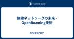
無線ネットワークの未来 - OpenRoaming技術
APC 技術ブログ
はじめに 初めまして、今年の4月からAPCに新卒入社した張です。 今回はこのブログに初めての投稿となっております。 先日、私はITイベントInteropに参加しました。イベントの会場内に提供しているWIFIはOpenRoaming技術を利用しているおり、これから紹介したいと思います。 以下は今回調べて、参考したサイトです。 www.cisco.com gblogs.cisco.com gblogs.cisco.com wballiance.com cityroam.jp OpenRoamingとは OpenRoamingは、Wi-Fi接続を革新的に改善する技術です。これは主にWireless …
6日前
EPP/EDR/XDRについて調べてみた
APC 技術ブログ
はじめに 初めまして、今年の4月からAPCに新卒入社した、柳田 大心です。 今回、初めてブログを書くことになりこの記事がその第１弾になります。 このテーマにした理由 私は先日、千葉県の幕張メッセで開催されたinterop 2024に参加してきました。 www.interop.jp そこでセキュリティ関連のブースに足を運ぶと必ずといっていいほど耳にした用語としてEPP/EDR/XDRがありました。当時は、どういった意味か分からずそのままになってしまい、、というわけでアウトプットとしてブログに掲載しよう！といった流れになります。 EPP/EDR/XDRとは EPP EPP(EndPoint Pro…
6日前
メディア通信のIP化技術
APC 技術ブログ
はじめに 初めましてこんにちは、今年の４月からAPCに新卒入社した平井です。 今回、このブログが私の初投稿になります。読んでくださる方々には温かく見守っていただけたらと思います。 私は先日、ネットワーク技術のITイベントであるInteropに参加してきました。イベントでは会場内にネットワークを構築する「ShowNet」というプロジェクトを見てきました。 ShowNetで私は「Media Over IP」という技術が気になったので話していきたいと思います。 以下、調べるにあたって参考にさせていただいたサイトです。 www.macnica.co.jp www.seiko-sol.co.jp www…
6日前
Azure Functions (Durable Function[Python])
APC 技術ブログ
はじめに こんにちは。ACS 事業部の奥山です。 Azure Functions の Durable Functions (Python) についての調査・検証を行ったので、備忘録を兼ねてブログにしておきます。 現在、担当しているシステムで時間のかかる処理を行う必要があり、調べた内容です。 様々な実現方法があるとは思いますが、Azure なら Durable Functions がオススメです。 Durable Functions (Azure Functions) とは Microsoftが開発した Durable Taskフレームワーク を基に構築された Azure Functionsの拡…
7日前
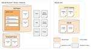
GitLabのtemplate機能を組み合わせて開発生産性を向上する 9
APC 技術ブログ
こんにちは、クラウド事業部 CI/CDサービスメニューチームの山路です。 今回はGitLabが提供する各種template機能を利用し、開発者の生産性の向上を目指すパターンをいくつか紹介いたします。template機能をまだ使っていない方や一部しか使ったことがない方は、ぜひ読んでいただければ幸いです。 GitLabのtemplate機能とは include include:template CI/CD Catalog Description template Wiki template Commit message template Comment template Project templ…
7日前
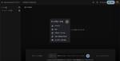
Google 「NotebookLM」を試す 1
APC 技術ブログ
目次 目次 はじめに NotebookLMとは 実際に操作してみる データの読み込み NotebookLMの起動画面 生成を使ってみる ブリーフィング・ドキュメントの出力結果 よくある質問の出力結果 質問の候補を使ってみる おわりに はじめに こんにちは。クラウド事業部の丸山です。 Googleの新サービスNotebookLMを試してみました。 NotebookLMは自分だけの生成系AIを作れるサービスの様で、現在はGemini pro 1.5が搭載されているようです。 通常のノートアプリを拡張する形で、テキストデータが存在する状態になると、 アップロードされている情報を基にしたプライベートな…
7日前
【AWS Summit Japan 2024 感想】参加できなかった人もまだ間に合う！個人的に良かったセッション！ 1
APC 技術ブログ
こんにちは、クラウド事業部の中根です。 AWS Summit Japan 2024が、6/20, 6/21で開催されました。 私は現地参加はしなかったものの、オンデマンド配信でいくつか視聴しました。 その中で、特に興味深かったものについて、感想を書きたいと思います。 ちなみに私は、AWS Summitをがっつり見るのは今年が初めてです。 AWS-05：AWSコスト管理の最前線 AWS-36：Amazon EKS + Karpenterで始めるスケーラブルな基盤作り AWS-59：アーキテクチャ道場 2024！ おわりに お知らせ AWS-05：AWSコスト管理の最前線 コスト最適化の5柱の1つ…
8日前
【AWS】AWS Summit Japan 2024 に現地参加してきました！ 4
APC 技術ブログ
目次 目次 はじめに イベントの概要 イベントの様子 会場入り口 会場図 ウェルカムボード ブースなどなど 基調講演(day1) ヴァーナー ボーガス氏 (Amazon.com 最高技術責任者（CTO）兼バイスプレジデント) 恒松 幹彦 氏 ( アマゾン ウェブ サービス ジャパン合同会社 ) 個別セッション Amazon Bedrock の活用によるデジタル教育サービスの生成 AI 機能拡張 生成 AI を推進するデータ基盤の構築 生成 AI を活用して医療のイノベーションを加速する 基調講演や個別セッションを観て感じたこと その他企業ブースなど Chaos Kitty Serverless…
8日前
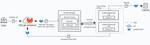
GitLab 17.1の紹介: Model registry in Beta / Code Suggestions in VSCodeでの複数候補の表示 / Secret Push Protection in Betaなど
APC 技術ブログ
こんにちは、クラウド事業部 CI/CDサービスメニューチームの山路です。 今回は6月20日にリリースされたGitLab 17.1 のアップデート内容を紹介します。本記事ではすべてのアップデート情報を詳細に記載してはいませんので、興味ある内容があれば各ドキュメントを参照ください。 about.gitlab.com Model registryがベータ版に GitLab Duo Code SuggestionsはVSCode上で複数の候補を表示可能に Secret Push Protection機能がベータ版に GitLab Runner AutoscalerがGAに Manual Job実行時に…
9日前
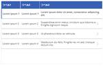
【Power Apps】「テーブルっぽいギャラリー」のテンプレート YAML
APC 技術ブログ
はじめに Power Platform 推進チームの小野です。 本稿では、テーブルのような見た目のギャラリーをテンプレート化した YAML について共有・解説します。 テーブルっぽいギャラリーの必要性 アプリの画面上に表形式でデータを表示する機会は多いはずです。多くの場合、アプリで実現したいことは「テーブルデータの操作」であり、テーブルにレコードを追加したり、レコードを選択して編集・削除したりする機能が求められます。レコードを選択する画面で、なじみ深い Excel のような表形式が好まれるのではないでしょうか。 Power Apps でテーブルを表示するコントロールとしては、データテーブル と…
11日前
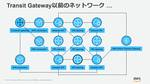
Transit Gatewayの概要と構築ポイント 3
APC 技術ブログ
目次 目次 はじめに こんな人に読んで欲しい Transit Gatewayとは Transit Gateway構築のポイント ①Transit Gatewayの作成 ②RAMでTransit Gatewayを別アカウントに共有 ③Transit Gatewayアタッチメントの作成 ④Transit Gatewayルートテーブルの作成 ⑤静的ルートの追加 ⑥Transit Gatewayルートテーブルとアタッチメントとの関連付け ⑦各プライベートサブネットのルートを追加 pingでの疎通確認 おわりに お知らせ はじめに こんにちは、クラウド事業部の馬藤です。 最近Transit Gatewa…
11日前
DAIS参加レポート：サンフランシスコ出張
APC 技術ブログ
はじめに GLB事業部Lakehouse部の阿部です。Databricksが主催するDATA + AI SUMMIT 2024(DAIS)に参加しました。DAISが終わってから1週間経ちましたが、興奮が収まっていません。本記事では、DAISを含むおよそ1週間の出張をダイジェストでお伝えしたいと思います。DAISやサンフランシスコ市街の雰囲気が伝わればと考えております。 弊社ではDAISのセッションを現地からレポートしており、以下の特設サイトからセッションごとの解説ブログを参照できます。 www.ap-com.co.jp 「セッションの振り返りをしたい、参加できなかったセッションがあるけど気にな…
11日前
Azure Container RegistryのArtifact Cacheでレート制限に備えよう 2
APC 技術ブログ
はじめに こんにちは、ACS事業部の吉川です。 Azure でコンテナを利用されている皆さまのところには、以下のようなメールが届いているかと思います。 このメールが何を意味するのか、何をしなければいけないのか、紐解いていきましょう。 Docker Hub のレート制限 2020年11月より、Docker Hub はコンテナイメージの Pull 回数に上限を設けるレート制限を設定しています。 www.docker.com このレート制限の影響を受けないようにするためには、リンク先にも記述があるように「Docker の有料プランを契約しレート上限を引き上げる」という対策がありますが、 それ以外の対…
11日前
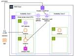
WEB３層のシステムをAWSで構築してみた（WordPress）セキュリティ向上版Part2（CloudFront）
APC 技術ブログ
はじめに こんにちは。クラウド事業部の山田です。 WordPressをホストする環境の構築を例にAWSの操作を学びました。 WEB３層のシステムをAWSで構築してみた（WordPress）：前編 WEB３層のシステムをAWSで構築してみた（WordPress）：後編 WEB３層のシステムをAWSで構築してみた（WordPress）：セキュリティ向上 今回はCloudFrontを経由してWebサイトを表示する基本的な設定手順を検証しました。 目次 はじめに 目次 構築済み環境と変更点 構築にあたり事前確認を要する事項 環境構築 共通操作 １．CloudFrontの作成 CloudFrontの作成…
11日前